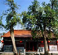

- 人文景观
太清宫,位于周口市鹿邑县城东5公里的太清宫镇的东北隅,是老子的诞生地,也是祭祀老子的祠庙,1978年被定为县级文物保护单位,1986年被定为河南省文物保护单位。
据《后汉书》和《鹿邑县志》记载,太清宫……
- 景区景点
西九华山旅游风景区位于河南省固始县陈淋子镇境内，北依淮河，南靠大别山，为国家AAA级景区，观赏面积80平方公里，目前已开发多个景区、近百个景点，是中原地区最大的集“茶、竹、禅、山水情”为一体的生……
- 精品线路
郑、汴、洛沿黄河旅游线，是我省的文化旅游精品工程，如今“三点一线”已经带动相关的城市和旅游形象。郑州、开封、洛阳、登封等城市荣获“中国优秀旅游城市”称号白马寺、少林寺等14家景区(点)……